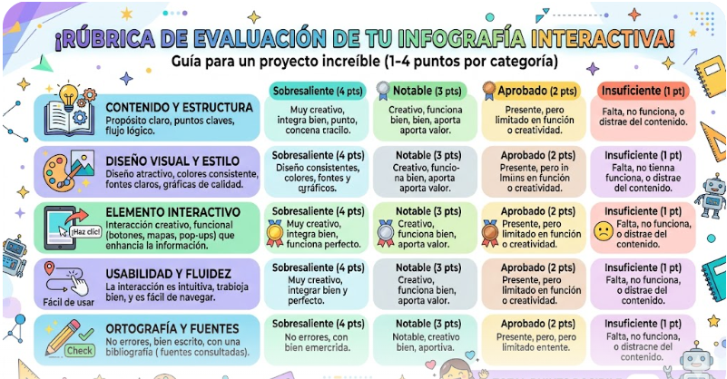
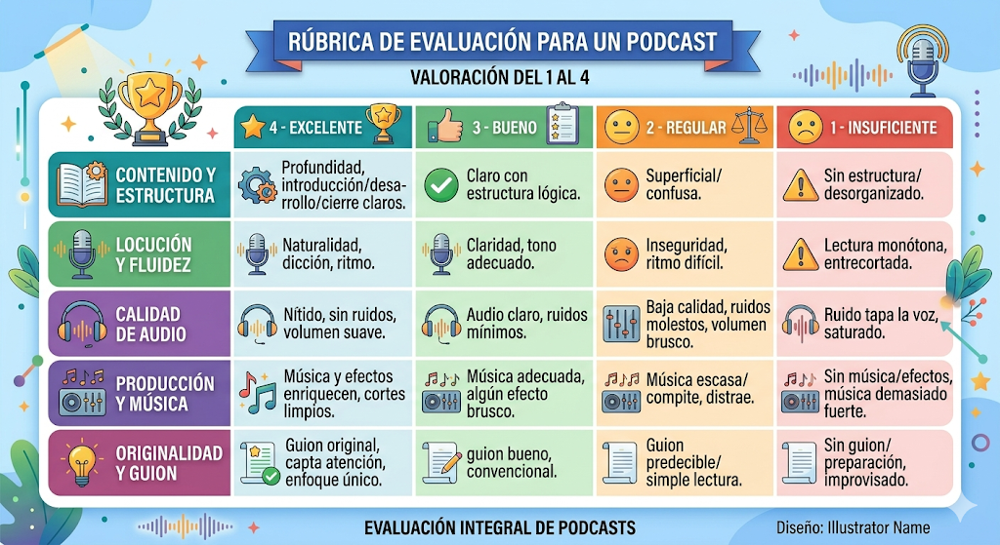
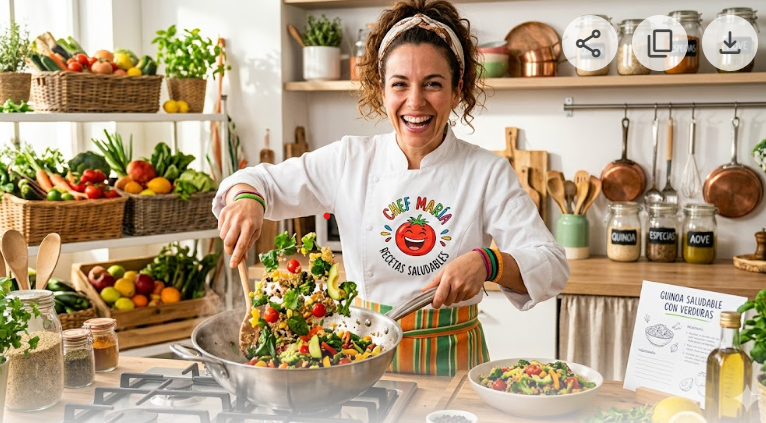

Caso clínico: obesidad
A continuación vamos a ver el siguiente caso clínico:
"Trabajas como TCAE en una clínica especializada en Obesidad y se decide realizar junto al equipo multidisciplinar una actividad para potenciar la alimentación y hábitos saludables en tus pacientes. Para ello tienes que diseñar unos talleres cortos de educación nutricional para los pacientes y sus familiares."
Dichos talleres los vais a realizar en el aula de ordenadores Itales durante la semana del 6-8 de mayo para entregarlos por Teams. Constarán de:
1.En grupos de 4: una encuesta o formulario con Google Forms donde se formularán 7 preguntas a los pacientes relacionadas con sus hábitos de alimentación. Obtened la información del apartado de Obesidad.
2. De manera individual: una infografía que debe tener un elemento interactivo, con Canva, Genially, etc., del "Decálogo de la Alimentación Saludable". Obtén la información del apartado de Dieta Mediterránea.
3. Sesión educativa con los pacientes: para ello vais a grabar en grupos de dos un podcast o vídeo (CapCut o similares) de 3 minutos máximo simulando una entrevista en consulta con los roles: paciente-TCAE en la que le preguntas sobre sus tomas diarias y debes proporcionarle mejoras de desayuno, media mañana, comida, merienda y cena.
4. En grupos de 4: finalmente confeccionareis unas sugerencias de media mañana, meriendas o una receta saludable para elaborar en el taller de cocina del centro.
Estas son las rúbricas de las distintas tareas a realizar que se mandarán por Teams durante la clase:
1. Tarea Formulario (2 puntos). Se valorará el trabajo en equipo y contenido de las preguntas al paciente para ello os pasaré una lista de cotejo por Teams.
2. Tarea infografía con elemento interactivo (2 puntos). Rúbrica:

3. Tarea vídeo o podcast (2 puntos). Rúbrica:

4. Tarea Receta saludable taller de cocina (2 puntos)

En este taller se valorará: incorporación de ingredientes saludables, la presentación de la receta, el trabajo en equipo.